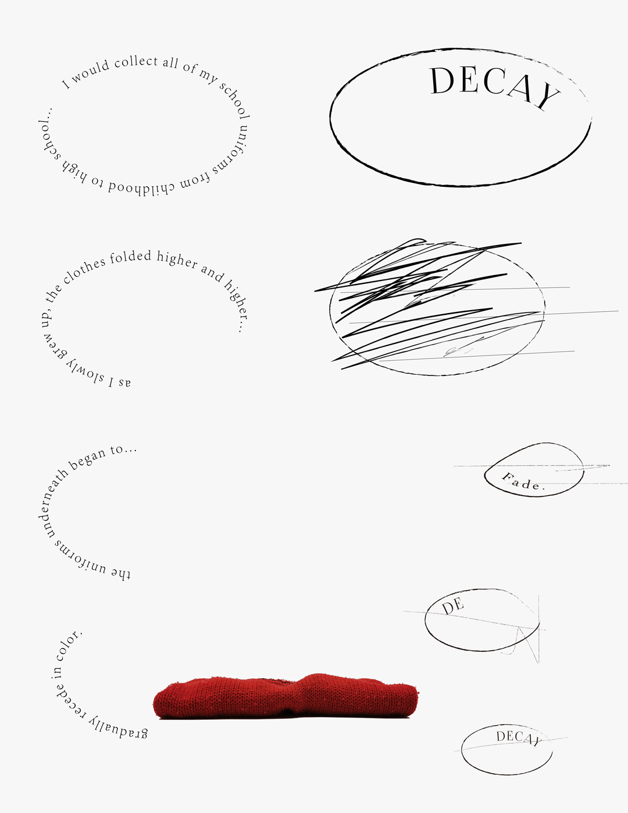

in a fast-paced life, people's perception of time is getting weaker and weaker. We rely on the clock, the electronic time on our cell phones...the most common phrase we hear is "What time is it?" But if we leave the life of having time ...
In this memo, I will record stories about time in nature.
They say that fish have a memory of only seven seconds.
Then the fish's perception of seven seconds is when they forget what happened before.
I would collect all of my school uniforms from childhood to high school and as I slowly grew up, the clothes folded higher and higher.
the uniforms underneath began to gradually recede in color.

A candle burned all night and in the early morning it went out. I know it was 12 hours.